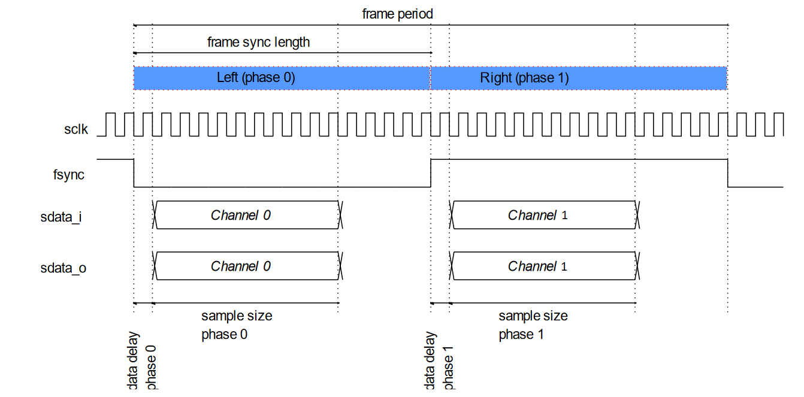
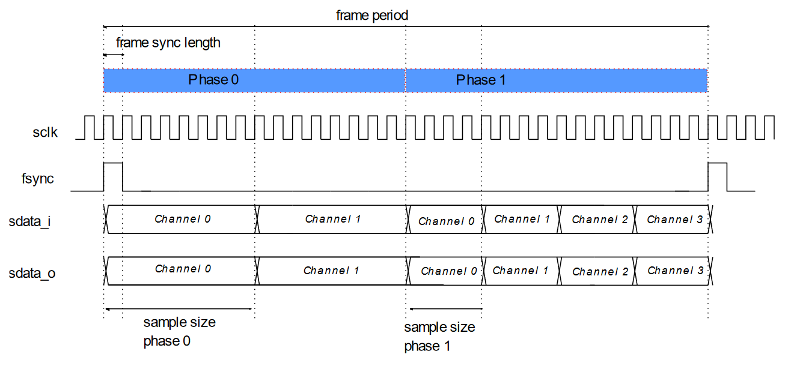
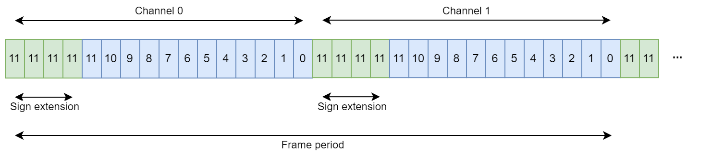

Overview
The EM9305 has an I2S peripheral that can be used for audio and other applications where a signal needs to be captured or rendered in real time.
Similar to the SPI interface, I2S is a synchronous interface that uses a data bus and a clock bus. However, because the data being transmitted is typically an audio signal that must be rendered in real time, and typically contains one or more channels, a frame bus is used to add synchronization information. The way it is used depends on the protocol. In I2S, the falling edge of the frame signal marks the beginning of channel 0, while the rising edge marks the beginning of channel 1. In TDM (Time Division Multiplexing), the frame signal is just a pulse, typically one serial clock, indicating the start of channel transmission. When bidirectional audio must be transmitted, two data buses are used, one for each direction.
The I2S peripheral is also capable of generating a master clock (MCLK), which is sometimes required by audio peripherals that have no internal clock generation.
The driver uses DMA together with the I2S peripheral to avoid using the CPU for buffer transfers from RAM to I2S and I2S to RAM. Before starting the driver, the software must first program the I2S transactions that define the memory blocks that will be used to send and receive I2S buffers. Once started, the driver runs autonomously on the programmed buffers, thanks to linked DMA operations, meaning that the software doesn’t need to restart a transaction after the last one has finished. This mechanism makes the driver less affected by real-time requirements; the software basically has the time of a transaction to process the free buffer.
The driver communicates with the user application using callback functions capable of handling events.
Protocols
The I2S peripheral can be configured to work with several protocols, which are :
I2S
TDM
Left justified
Right justified
TDM-I2S
These protocols can be configured at startup using the configuration structure. The driver is designed to give the user maximum flexibility when changing the sample rate, sample size, or number of audio channels. However, the driver is designed in such a way that the protocol to be used must be defined in the NVM_ConfigModules() function and can’t be changed at runtime.
I2S configuration structure
The I2S module is configured using the gI2S_Config structure. The default configuration is shown below:
Configuration |
Description |
Value |
|---|---|---|
enabled |
I2S module enable/disable |
false |
gpioSclk |
Serial clock GPIO |
8 |
gpioSdataOut |
Serial data out GPIO |
9 |
gpioSdataIn |
Serial data in GPIO |
9 |
gpioFsync |
Frame sync GPIO |
10 |
gpioMclk |
Master clock GPIO |
0xFF (not used) |
transactionDepth |
The size of the transaction
queue
|
4 |
autoClk |
Let the driver manage the
clocks automatically
|
true |
config.bits.protocol |
The protocol |
I2S_PROTOCOL_I2S |
config.bits.mode |
The mode |
I2S_MASTER_MODE |
config.bits.cpha |
Clock phase of SCLK |
0 |
config.bits.fsyncPolarity |
Fsync active polarity |
0 |
config.bits.
phaseLengthMode
|
Phase0 length mode
configuration
|
I2S_PHASE0_LENGTH_FSYNC_EDGE |
config.bits.lsbitFirst |
Send least significant bit first |
0 |
config.bits.lsbyteFirst |
Send least significant byte first |
0 |
config.bits.I2sSignExtendEn |
Enable sign extension for 12 and
20 bits sample sizes
|
1 |
phase0.bits.delay |
Delay between start of phase 0
and first data bit
|
1 |
phase0.bits.sampleSize |
Phase 0 audio sample size |
I2S_SAMPLE_FORMAT_16BIT |
phase1.bits.delay |
Delay between start of phase 1
and first data bit
|
1 |
phase1.bits.sampleSize |
Phase 1 audio sample size |
I2S_SAMPLE_FORMAT_16BIT |
transferMode |
Transfer mode |
I2S_TX_RX |
phase0TxChannels |
Phase 0 number of TX channels |
1 |
phase1TxChannels |
Phase 1 number of TX channels |
1 |
phase0RxChannels |
Phase 0 number of RX channels |
1 |
phase1RxChannels |
Phase 1 number of RX channels |
1 |
samplingRate |
Sampling rate |
I2S_SAMPLE_RATE_44KHZ |
serialClockRatio |
Serial clock ratio with
samplingRate
|
64 |
masterClockRatio |
Master clock ratio with
samplingRate
|
512 |
phase0Length |
Phase 0 length when
configured by software
|
32 |
fsyncLength |
Fsync length |
32 |
Warning
The I2S configuration structure is in non-persistent memory and is lost during sleep. More on that below.
The default configuration must be changed using the NVM_ConfigModules() function. Since this function is called every time the system wakes up, it will be automatically re-configured with the user parameters. Below is an example of how to access it and change some parameters :
#include "i2s.h"
void NVM_ConfigModules(void)
{
//...
// Register I2S module
I2S_RegisterModule();
// Enable I2S
gI2S_Config.enabled = true;
// I2S GPIO configuration
gI2S_Config.gpioSclk = 8u;
gI2S_Config.gpioSdataOut = 9u;
gI2S_Config.gpioSdataIn = 9u;
gI2S_Config.gpioFsync = 10u;
gI2S_Config.gpioMclk = 11u;
//...
}
Configuration examples
Below are some examples of how to configure different protocols and explanations about the parameters.
I2S Protocol
The configuration below can be used to achieve the result shown in this image :
{kind=link}
void NVM_ConfigModules(void)
{
// Register and enable I2S module
I2S_RegisterModule();
gI2S_Config.enabled = true;
// I2S GPIO configuration
gI2S_Config.gpioSclk = 7u; // Serial / bit clock
gI2S_Config.gpioSdataOut = 8u; // Data output gpio (not used in input mode)
gI2S_Config.gpioSdataIn = 9u; // Data input gpio (not used in output mode)
gI2S_Config.gpioFsync = 10u; // Frame / synchronization signal
gI2S_Config.gpioMclk = 11u; // Master clock signal (0xFF if not used)
gI2S_Config.config.bits.protocol = I2S_PROTOCOL_I2S; // Configure for I2S protocol
gI2S_Config.config.bits.mode = I2S_MASTER_MODE; // Our device is the master (it will generate the clocks)
gI2S_Config.config.bits.cpha = 0; // I2S polarity: capture at rising edge
gI2S_Config.config.bits.fsyncPolarity = 0; // I2S polarity: low is channel 0 / left channel
gI2S_Config.config.bits.phaseLengthMode = I2S_PHASE0_LENGTH_FSYNC_EDGE; // Phase transition occurs at fsync edge
gI2S_Config.transferMode = I2S_TX_RX; // Configure for bidirectional transfer (output and input gpio are used)
// Configuration for phase 0
// In I2S protocol, phase 0 is used to transmit the channel 0 sample
gI2S_Config.phase0.bits.delay = 1; // The sample transmission starts one bit clock after the beginning of the phase
gI2S_Config.phase0.bits.sampleSize = I2S_SAMPLE_FORMAT_16BIT; // 16 bits sample format
// Configuration for phase 1
// Use the same configuration as for phase 0
gI2S_Config.phase1.bits.delay = 1;
gI2S_Config.phase1.bits.sampleSize = I2S_SAMPLE_FORMAT_16BIT;
// Configure the number of channels to send and receive for phase 0
// For stereo (2 channels) and bidirectional operation, there is one channel by phase and by direction
gI2S_Config.phase0TxChannels = 1;
gI2S_Config.phase0RxChannels = 1;
// Configure the number of channels to send and receive for phase 1
gI2S_Config.phase1TxChannels = 1;
gI2S_Config.phase1RxChannels = 1;
// Set default sampling rate, this is the frame signal frequency
gI2S_Config.samplingRate = I2S_SAMPLE_RATE_44KHZ;
// The serial clock frequency is a multiple of the sample rate. This ratio defines how many periods
// of the serial clock are contained in one frame period. That is, it is the number of bits transmitted in one frame period.
// Therefore, it must be sufficient to transmit all samples from all phases.
// This ratio can be calculated as follows:
// Maximal number of channels for phase 0 (tx and rx) = 1
// Maximal number of channels for phase 1 (tx and rx) = 1
// Sample size for phase 0 = 16 bits
// Sample size for phase 1 = 16 bits
// Number of bits by frame = 1 * 16 + 1 * 16 = 32 bits
gI2S_Config.serialClockRatio = 32;
// For the master clock, there are three possibilities :
// 1. No master clock required, put 0xFF for the pin number and 0 for mclk ratio.
// 2. The master clock is used by the peripheral as a system clock and it needs an independent clock running at a given
// frequency. Pass 0 for the masterClockRatio and use the function I2S_SetMclkFrequency(x) to set the required
// master clock frequency.
// 3. The master clock must run at a frequency that is a multiple of the fsync and sclk frequencies, therefore it
// must be synchronized with sclk. Use the masterClockRatio to set by how many you want to multiply the fsync
// (sampling rate) frequency. IMPORTANT: the masterClockRatio must be a multiple of the serialClockRatio, it
// means that with a serialClockRatio of 32, possible values will be {32, 64, 96, 128, ...}.
// Note: you can retrieve the minimal and maximal frequencies that can be configured for fsync, sclk and mclk using
// I2S_GetMinClkFrequency() and I2S_GetMaxClkFrequency(). Always ensure that what you configure is in this range.
// Note: The granularity of the produced frequencies is the system clock. When generating high frequencies that aren't
// a divider of the system clock, jitter may occur.
gI2S_Config.masterClockRatio = 512; // Possibility 3 : 44100 * 512 = 22.5792MHz
// For I2S protocol, fsync length is the length of one phase, meaning half the total frame and
// therefore half the serial clock ratio.
gI2S_Config.fsyncLength = 16;
// As we configured I2S_PHASE0_LENGTH_FSYNC_EDGE, phase 0 length is automatically equal to fsync active polarity length
// Therefore, this field has no effect. But the correct value would be 16 bits.
gI2S_Config.phase0Length = 0;
}
TDM (Time Division Multiplexing)
The configuration below can be used to achieve the result shown in this image :
{kind=link}
void NVM_ConfigModules(void)
{
// Register and enable I2S module
I2S_RegisterModule();
gI2S_Config.enabled = true;
// I2S GPIO configuration
gI2S_Config.gpioSclk = 7u; // Serial / bit clock
gI2S_Config.gpioSdataOut = 8u; // Data output gpio (not used in input mode)
gI2S_Config.gpioSdataIn = 9u; // Data input gpio (not used in output mode)
gI2S_Config.gpioFsync = 10u; // Frame / synchronization signal
gI2S_Config.gpioMclk = 11u; // Master clock signal (0xFF if not used)
gI2S_Config.config.bits.protocol = I2S_PROTOCOL_TDM; // Configure for TDM protocol
gI2S_Config.config.bits.mode = I2S_MASTER_MODE; // Our device is the master (it will generate the clocks)
gI2S_Config.config.bits.cpha = 1; // TDM polarity: capture at falling edge
gI2S_Config.config.bits.fsyncPolarity = 1; // TDM polarity: pulse (or high state) at start of phase 0
gI2S_Config.config.bits.phaseLengthMode = I2S_PHASE0_LENGTH_SW_VALUE; // Phase 0 length is configured by software
gI2S_Config.transferMode = I2S_TX_RX; // Configure for bidirectional transfer (output and input gpio are used)
// Configuration for phase 0
// As showed on the image, there is no data delay configured (first bit of sample is latched at first falling edge of sclk)
// The sample size for Phase 0 is twice the sample size for Phase 1. In the image it's 8 bits and 4 bits.
// But we'll use 16 bits and 8 bits.
gI2S_Config.phase0.bits.delay = 0;
gI2S_Config.phase0.bits.sampleSize = I2S_SAMPLE_FORMAT_16BIT; // 16 bits sample format for phase 0
// Configuration for phase 1
// This time the sample size is 8 bits
gI2S_Config.phase1.bits.delay = 0;
gI2S_Config.phase1.bits.sampleSize = I2S_SAMPLE_FORMAT_8BIT;
// Configure the number of channels to send and receive for phase 0
// The image shows two channels for phase 0
gI2S_Config.phase0TxChannels = 2;
gI2S_Config.phase0RxChannels = 2;
// Configure the number of channels to send and receive for phase 1
// The image shows four channels for phase 1
gI2S_Config.phase1TxChannels = 4;
gI2S_Config.phase1RxChannels = 4;
// Set default sampling rate, this is the frame signal frequency
gI2S_Config.samplingRate = I2S_SAMPLE_RATE_44KHZ;
// The serial clock frequency is a multiple of the sample rate. This ratio defines how many periods
// of the serial clock are contained in one frame period. That is, it is the number of bits transmitted in one frame period.
// Therefore, it must be sufficient to transmit all samples from all phases.
// This ratio can be calculated as follows:
// Maximal number of channels for phase 0 (tx and rx) = 2
// Maximal number of channels for phase 1 (tx and rx) = 4
// Sample size for phase 0 = 16 bits
// Sample size for phase 1 = 8 bits
// Number of bits by frame = 2 * 16 + 4 * 8 = 64 bits
gI2S_Config.serialClockRatio = 64;
// For the master clock, there are three possibilities :
// 1. No master clock required, put 0xFF for the pin number and 0 for mclk ratio.
// 2. The master clock is used by the peripheral as a system clock and it needs an independent clock running at a given
// frequency. Pass 0 for the masterClockRatio and use the function I2S_SetMclkFrequency(x) to set the required
// master clock frequency.
// 3. The master clock must run at a frequency that is a multiple of the fsync and sclk frequencies, therefore it
// must be synchronized with sclk. Use the masterClockRatio to set by how many you want to multiply the fsync
// (sampling rate) frequency. IMPORTANT: the masterClockRatio must be a multiple of the serialClockRatio, it
// means that with a serialClockRatio of 32, possible values will be {32, 64, 96, 128, ...}.
// Note: you can retrieve the minimal and maximal frequencies that can be configured for fsync, sclk and mclk using
// I2S_GetMinClkFrequency() and I2S_GetMaxClkFrequency(). Always ensure that what you configure is in this range.
// Note: The granularity of the produced frequencies is the system clock. When generating high frequencies that aren't
// a divider of the system clock, jitter may occur.
gI2S_Config.masterClockRatio = 512; // Possibility 3 : 44100 * 512 = 22.5792MHz
// For TDM protocol, fsync is a pulse of one sclk that occurs at every start of phase 0.
// Therefore the length is one.
gI2S_Config.fsyncLength = 1;
// As we configured I2S_PHASE0_LENGTH_SW_VALUE, phase 0 length is configured by this value.
// We can calculate the phase 0 length, which is the number of bits transmitted during phase 0, by
// multiplying the number of channels in phase 0 by the sample size. This gives :
// phase 0 length = 2 * 16 = 32 bits
gI2S_Config.phase0Length = 32;
}
Note that the TDM protocol typically uses only one phase (phase 0) to transmit x channels of the same sample size. This example is a bit more advanced because we are transmitting different sample sizes. In more basic TDM case we could use a phaseLengthMode of I2S_PHASE0_LENGTH_FRAME_PERIOD to indicate to the driver that we’re going to drop phase 1. The configuration related to phase 1 will then be discarded and the number of channels (tx and rx) for phase 1 must be set to 0.
Change the configuration at runtime
Depending on application requirements, the devices may need to change sample rate or sample sizes. When communicating with a more advanced device, such as a hardware codec, even the number of audio channels may change to properly accommodate a new configuration.
To achieve this, the driver provides some functions to change the configuration defined at startup. These must be called while the driver is idle. The prototypes are listed below:
int32_t I2S_SetClockFrequencies(I2S_SamplingRate_t samplingRate, uint16_t sclkRatio, uint16_t mclkRatio);
int32_t I2S_SetMclkFrequency(uint32_t freq);
int32_t I2S_SetPhase0Config(uint16_t delay, I2S_SampleSize_t sampleSize, uint8_t rxChannels, uint8_t txChannels);
int32_t I2S_SetPhase1Config(uint16_t delay, I2S_SampleSize_t sampleSize, uint8_t rxChannels, uint8_t txChannels);
int32_t I2S_SetPhase0Length(uint16_t phase0Length);
int32_t I2S_SetFsyncLength(uint16_t fsyncLength);
Warning
Because the gI2S_Config structure is not stored in persistent memory during sleep, a configuration change made using these functions will inevitably be lost on wakeup. It is the user’s responsibility to call these functions again on wakeup to ensure that the configuration is set correctly.
Master / slave mode
The driver can be used as either an I2S master or slave. The main difference between these modes is that the master is responsible for generating the clocks, while the slave only receives them. As a result, the GPIOs used for the serial clock and the frame clock are configured as output in master mode and as input in slave mode.
Transfer mode (RX, TX or RX+TX)
The driver can be used to work in one of three modes of operation, which are :
I2S_TX_ONLY : The driver only sends data on gpioSdataOut, gpioSdataIn is not used.
I2S_RX_ONLY : The driver only receives data on gpioSdataIn, gpioSdataOut is not used.
I2S_TX_RX : Both direction are used.
Consequently, the driver cannot be started for TX operations if the configured mode is I2S_RX_ONLY, nor for RX operations if configured for TX only. This is also available for the functions that add transactions.
Note
The transfer mode cannot be changed at runtime, so if a direction change is to be performed dynamically, the driver must first be configured to I2S_TX_RX transfer mode. The transfer mode only affects the initialization of the driver, where enabling only the TX side or only the RX side can slightly reduce the memory usage. However, the driver can be used for TX only or RX only even if it is configured for RX+TX operation.
Configuration of the clocks
As explained in the introductory chapter, I2S uses three clocks :
FSYNC (WS, LRCLK) is the frame signal that runs at the sample rate frequency
SCLK (BCLK, SCK) is the bit clock
MCLK (MCK) is the master clock, ususally running at a multiple of the FSYNC frequency, or at a fixed, independent frequency, usually used as the system clock by the I2S peripheral
The FSYNC frequency is set once in the NVM_ConfigModules() function using the gI2S_Config.samplingRate parameter. It can then be changed using the I2S_SetClockFrequencies(…) function.
Serial clock (SCLK)
The serial clock frequency is always configured by setting the serialClockRatio, which defines by how many the sampling frequency is multiplied to create the serial clock. It also means it defines how many bits are transmitted during an I2S frame.
serial clock = sampling rate * sclkRatio
There are three ways to configure the master clock, depending on the I2S peripheral you are communicating with.
Case 1 : MCLK not used
If the master clock is not needed by the I2S peripheral, you can pass an invalid value for the GPIO number.
void NVM_ConfigModules(void)
{
...
gI2S_Config.gpioMclk = 0xFF; // 0xFF means no gpio is used for master clock
gI2S_Config.masterClockRatio = 0; // Ensure to pass 0 when not used
...
}
When calling the I2S_SetClockFrequencies(…) function, be sure to always pass 0 for the master clock argument.
int32_t I2S_SetClockFrequencies(I2S_SAMPLE_RATE_44KHZ, 32, 0);
Case 2 : MCLK is a multiple of FSYNC
The I2S peripheral requires the master clock to be a multiple of the fsync frequency (integer ratio) and requires FSYNC, SCLK and MCLK to be synchronous. This is typical when communicating with a DAC/ADC.
Since MCLK must be synchronous to SCLK, you must ensure that masterClockRatio / serialClockRatio is also an integer ratio. This means that with a serialClockRatio of 32, possible values for masterClockRatio would be {32, 64, 96, 128, …}.
serial clock = sampling rate * sclkRatio
master clock = sampling rate * mclkRatio
mclkRatio % sclkRatio = 0 // Condition
You can specify the serialClockRatio and masterClockRatio in the NVM_ConfigModules() function :
void NVM_ConfigModules(void)
{
...
gI2S_Config.gpioMclk = 11u; // This time we use it
gI2S_Config.samplingRate = I2S_SAMPLE_RATE_44KHZ; // Set fsync frequency
gI2S_Config.serialClockRatio = 64; // 44100 * 64 = 2.8224Mhz (64 bits by frame)
gI2S_Config.masterClockRatio = 512; // 44100 * 512 = 22.5792MHz
...
}
You can change this configuration by calling the I2S_SetClockFrequencies(…) function. The status returned will tell you if the change was handled correctly. See the documentation for more information on the status returned by the functions.
int32_t I2S_SetClockFrequencies(I2S_SAMPLE_RATE_44KHZ, 32, 512);
Warning
Unlike the I2S_SetClockFrequencies(…) function, which returns an error code if the given ratios are invalid, there is no error mechanism for the NVM_ConfigModules() function. This means that if the masterClockRatio or serialClockRatio are invalid or result in an unsupported frequency, the system won’t work and it might be difficult to determine the reason. Be careful to check that the ratios are valid.
Case 3 : MCLK is used independently
Some devices, such as advanced codec circuits, don’t require the master clock frequency to be synchronized to FSYNC and SCLK. In this case, the I2S_SetMclkFrequency(…) function can be used to set the master clock to a fixed frequency.
In the NVM_ConfigModules() function, pass 0 for the masterClockRatio :
void NVM_ConfigModules(void)
{
...
gI2S_Config.gpioMclk = 11u; // This time we use it
gI2S_Config.samplingRate = I2S_SAMPLE_RATE_44KHZ; // Set fsync frequency
gI2S_Config.serialClockRatio = 64; // 44100 * 64 = 2.8224Mhz (64 bits by frame)
gI2S_Config.masterClockRatio = 0; // MCLK will be used independently
...
}
Then, use the I2S_SetMclkFrequency(…) function to set the clock frequency.
I2S_SetMclkFrequency(13000000); // Set MCLK to run at 13MHz
Note
If MCLK is set this way, be sure to always pass 0 for the mclkRatio when calling I2S_SetClockFrequencies(…) to avoid overriding the configuration made by I2S_SetMclkFrequency(…).
Automatically manage the clocks
The driver can manage the clocks itself (this is the default option), i.e. it will automatically start sclk, mclk and fsync when the driver is started, and stop them when the driver is stopped. This option can be changed in the configuration structure :
gI2S_Config.autoClk = false;
When set to false, it is the user’s responsibility to ensure that the clocks are working when the driver needs them. The clocks can be enabled and disabled with the following function :
void I2S_SetClocksState(bool masterClk, bool serialClk, bool fsync);
Typically, it should be called before the startXx() function to enable the clocks, and after the driver has fired the I2S_EVT_FINISHED event to disable them.
Note
When using the gI2S_Config.autoClk option, you will typically call the I2S_SetMclkFrequency(…) on each wakeup to set the frequency once. The driver will automatically output the clock when running. You could also set the gI2S_Config.autoClk flag to false and use the I2S_SetClocksState(…) function to select when to enable the master clock.
Note
I2S_GetMinClkFrequency() and I2S_GetMaxClkFrequency() can be used to get the minimum and maximum frequencies that can be configured for fsync, sclk and mclk. Always make sure that the resulting frequencies are within this range. The maximum frequency is typically half the system clock and the minimum frequency is typically the system clock divided by 2^16.
Warning
The granularity of the generated frequencies is the system clock. Generating high frequencies that don’t divide the system clock can cause jitter.
Transactions system
As mentioned in the Overview chapter, the driver uses DMA to transfer the data buffers between RAM and the I2S FIFO queue without the help of the CPU. The DMA transfers are chained together to form a linked list, making the hardware completely autonomous. When a DMA transfer is finished, i.e. new buffers are available to be filled or read, the hardware triggers an interrupt which is used by the driver to stay synchronized with the hardware state.
To make the driver work, the first step is to configure the DMA transfers. This can be done using the I2S_AddXxTransaction(…) function, where a transaction is a structure referencing the buffer to be used in the DMA transfer and a user callback. A transaction is always added to the end of the linked list and points to the beginning, creating a circular list.
int32_t I2S_AddTxTransaction(uint8_t *pTxBuffer, uint16_t length, I2S_DriverCallback_t pCallback, void *pUserData);
int32_t I2S_AddRxTransaction(uint8_t *pRxBuffer, uint16_t length, I2S_DriverCallback_t pCallback, void *pUserData);
The callbacks passed as parameters are used to notify the user of an event related to this transaction. Typically, the same callback is used for all transactions because the transaction buffer can be retrieved from the event object. However, different designs are possible.
The maximum number of transactions can be configured using the gI2S_Config.transactionDepth parameter. Typically, you will use two transactions referencing two ping-pong buffers. That is, while one buffer is used by the hardware, the other is used by the software, and they are swapped when the transaction is completed.
The function below can be used to clear the transaction lists. It is particularly useful when a configuration change is required after the driver has been stopped.
int32_t I2S_ClearTransactions(void);
Samples buffers
The audio signal is represented in the data buffers using PCM modulation, which is a way of digitally representing an audio signal (see https://en.wikipedia.org/wiki/Pulse-code_modulation).
The number of bytes per sample depends on the phase configuration. When using 12- or 20-bit samples, the number of bytes is 2 or 3, respectively. If sign extension is enabled (default), the four most significant bits take the value of the bit sign.
Samples from each channel are placed in the buffer in sequence, as shown below for 2 channels and 12-bit samples :
{kind=link}
This image also shows how the sign extension works when the sample size is not a multiple of 8.
Since it’s not possible to send or receive incomplete frames, the buffer length must be a multiple of the frame length to ensure that there are always an integer number of frames in a buffer. You can easily retrieve the number of bytes per frame according to the current I2S configuration using the functions below :
uint32_t I2S_GetBytesPerTxFrame(void);
uint32_t I2S_GetBytesPerRxFrame(void);
According to the example in the figure above, these functions would return 4 bytes per frame.
Note
If the buffer provided to the I2S_AddXxTransaction(…) function does not have a length that is a multiple of the frame length, the driver will automatically round down the length and discard the extra bytes.
The selected buffer length depends on the application requirements. However, for audio applications, it is common to choose a length that results in a transaction duration of 7.5 or 10ms. The buffer length for a given transaction duration can be calculated as shown below :
len : buffer length [byte]
sr : sample rate [Hz]
sb : sample size [byte]
ch : number of channels
trT : transaction duration [ms]
len = sr * sb * ch * trT / 1000
Basic example :
sr = 48kHz
sb = 2 bytes (16 bits sample size)
ch = 2 (stereo)
trT = 10ms
len = 48'000 * 2 * 2 * 10 / 1000 = 1920 bytes
Using the example parameters, this means that a transaction will take 10ms and the ping pong buffers will swap at a frequency of 100Hz.
Start transactions
Once the transactions are configured, the driver can be started using the following functions:
int32_t I2S_StartTx(uint32_t nLoops); // Available in TX_ONLY and TX_RX modes
int32_t I2S_StartRx(uint32_t nLoops); // Available in RX_ONLY and TX_RX modes
int32_t I2S_StartRxTx(uint32_t nLoops); // Available in TX_RX mode
Note
Do not forget to start the clocks before if autoClk was set to false.
A number of loops can be configured for each start function. The value 0 can be passed to run indefinitely. A loop is defined as a single iteration through the list of transactions. This means that if there are two 10ms transactions in the list, specifying one loop will start the driver for 20ms.
When started for a certain number of loops, the number of remaining loops can be retrieved using the functions below :
uint32_t I2S_GetTxRemainingLoops(void);
uint32_t I2S_GetRxRemainingLoops(void);
Note
These functions will return 0 in case the driver is stopped or runs indefinitely.
You can check that the driver is working at any time using these functions :
bool I2S_IsTxWorking(void);
bool I2S_IsRxWorking(void);
Stop transactions
There are two ways to stop the driver. The soft way requests to stop as soon as possible, i.e. the current transaction is completed before the clocks and the module are disabled.
void I2S_StopTx(void);
void I2S_StopRx(void);
The hard way stops the hardware directly, ignoring any ongoing transaction and any side effects it might cause.
void I2S_ForceStop(void);
Driver callbacks
The driver uses callbacks to inform the user application about state and events. A transaction communicates its state using the user-provided callback, if configured. The I2S driver callback prototype is as follows :
void I2S_Callback(const I2S_Event_t *event, void *pUserData);
The callback takes as argument an I2S_Event_t containing multiple fields :
The status of the transaction
I2S_STATUS_TX: Event is related to a TX transaction
I2S_STATUS_RX: Event is related to a RX transaction
The type of the transaction
I2S_EVT_BUFFER_READY: The transaction buffer is ready for read or write (depending on TX or RX event)
I2S_EVT_FINISHED: The driver has finished its operation for RX or TX direction
I2S_EVT_SYNC_ERROR: An synchronization error occurred internally
I2S_EVT_DMA_ERROR: A DMA error occurred
The transaction buffer
Available if status is of type I2S_EVT_BUFFER_READY
The length of that buffer
The I2S_EVT_BUFFER_READY event is fired at the end of each successful transaction, i.e., at the transaction duration interval. If the event is of type TX, the buffer is ready to be filled by the application, if of type RX, the buffer is ready to be read by the application.
The I2S_EVT_FINISHED event can be triggered by two conditions:
When the driver has been started for a certain number of loops
After calling the I2S_StopXx() function
In all cases, it means that the driver has successfully completed its operations and has stopped properly for the direction specified by the event type. If the driver is running in both RX and TX directions and the gI2S_Config.autoClk flag is true, the clocks will not stop until both directions are stopped, that is, when the two I2S_EVT_FINISHED have been fired.
Note
A call to I2S_ForceStop() will stop the driver directly, the user won’t be notified by an event.
The I2S_EVT_SYNC_ERROR event is triggered when the software loses synchronization with the hardware. This usually means that the DMA interrupt has been delayed too long by other high priority interrupts. Make sure that the application doesn’t spend too much time in other interrupts and check that the transaction duration is not too short according to the application timings. It is possible to recover from this type of error by restarting the driver.
The I2S_EVT_DMA_ERROR event is fired on general DMA error and implies the end of driver operations.
The example below shows a typical callback implementation where the driver is used in bidirectional mode and the input buffer is copied to the output buffer (fallback).
static void I2S_Callback(I2S_Event_t const *event, void *data)
{
// Switch on event type
switch(event->type)
{
case I2S_EVT_DMA_ERROR:
case I2S_EVT_SYNC_ERROR:
{
// Call application error handler
APP_HandleError(0);
break;
}
case I2S_EVT_BUFFER_READY:
{
// Keep reference on TX buffer
static uint8_t *txBuf;
if(event->status == I2S_STATUS_TX)
{
// Save last TX buffer reference
txBuf = event->bufRdyEvt.buffer;
}
else
{
// Copy RX buffer into tx buffer
memcpy(txBuf, event->bufRdyEvt.buffer, event->bufRdyEvt.length);
// This works only if the buffers used for TX and RX transactions
// have the same length !
}
break;
}
case I2S_EVT_FINISHED:
{
// Check if TX and RX are finished
if(!I2S_IsTxWorking() && !I2S_IsRxWorking())
{
// Operations fully finished
// We can post an event to the application to inform and
// eventually continue a state machine
APP_PostEvent(APP_I2S_FULLY_FINISHED);
}
break;
}
default:
break;
}
}
System sleep
The system can’t go to sleep while the driver is running. Since the configuration structure (gI2S_Config) isn’t saved during sleep, the driver will always load the configuration provided by the NVM_ConfigModules() function on wakeup. As a result, if the configuration has been changed using one of the following function, it is needed to call them again to reconfigure the driver properly.
int32_t I2S_SetClockFrequencies(I2S_SamplingRate_t samplingRate, uint16_t sclkRatio, uint16_t mclkRatio);
int32_t I2S_SetPhase0Config(uint16_t delay, I2S_SampleSize_t sampleSize, uint8_t rxChannels, uint8_t txChannels);
int32_t I2S_SetPhase1Config(uint16_t delay, I2S_SampleSize_t sampleSize, uint8_t rxChannels, uint8_t txChannels);
int32_t I2S_SetPhase0Length(uint16_t phase0Length);
int32_t I2S_SetFsyncLength(uint16_t fsyncLength);
In addition, the transactions are also stored in a non persistent memory, meaning the configuration must be done again at each wakeup using the I2S_ClearTransactions() followed by the I2S_AddXxTransaction(…) functions.
DMA channels
Note
This chapter only applies if you need to use both I2S driver and DMA drivers in your application.
Since the I2S driver uses the same DMA channels as the UART driver, there may be a conflict if both are used together. The correct workaround for this problem is to use the non-DMA version of the UART driver. This is preferable to changing the DMA channels because they are assigned and using other channels may cause other conflicts and other problems.
Unfortunately, the UART driver that uses DMA was added in ROM v3. Since the linker takes the symbols from the ROM before considering those from the CMakeLists.txt file, the only way to force the use of the standard UART driver is to modify the ROM symbols file.
As a result, you’ll need to remove these symbols from the file located in rom/bin/v3.0/rom.sym. The symbols that must be deleted are denoted by a “-” below :
...
IRQHandler_NVM=0x102cb8 0x16
IRQHandler_SpiSlaveRx=0x102d00 0x22
IRQHandler_SpiSlaveTx=0x102d24 0xb2
- IRQHandler_UartRx=0x102dd8 0x22
- IRQHandler_UartTx=0x102dfc 0xb2
InitPRNG=0x10a84c 0x11c
InvMod_binary=0x10859c 0x114
InvertMSWandLSW=0x1086b0 0x22
...
SPIS_SendDataEx=0x1043f0 0xbc
SPIS_SetConfiguration=0x1044ac 0x2a
SetPRNGCtx=0x10aa8c 0x12
- UART_BlockCommunication=0x104620 0xa
- UART_Enable=0x10465c 0x1a
- UART_HasPendingData=0x104754 0x26
- UART_InitBuffers=0x10477c 0x32
- UART_InitNew=0x1047b0 0x90
- UART_ReceiveDataEx=0x1048f8 0xde
- UART_Restart=0x1049d8 0x70
- UART_Restore=0x104a48 0x90
- UART_Save=0x104ad8 0x2
- UART_SendDataEx=0x104adc 0xbc
- UART_SetBaudRate=0x104b98 0xa6
- UART_SetBaudRateEx=0x104c40 0x1c
- UART_SetConfiguration=0x104c5c 0x26
VoltMon_GetBrownOutCompStat=0x104c94 0x10
VoltMon_GetVbat1CompStat=0x104ca4 0x10
VoltMon_GetVccCompStat=0x104cb4 0x10
...
gSPIS_Config=0x80ffa8 0x28
gSPIS_Transport=0x10c3a8 0x24
gTransport_ActiveTransport=0x801090 0x4
- gUART_Config=0x80ffd0 0x2c
gUART_Transport=0x10c3cc 0x24
gVersionHeader=0x10ffe0 0x20
gpEMSystemNPRAM=0x801094 0x4
...
You can easily find them by searching “uart” keyword in the file using ctrl+f.
Then, do not forget to add the “uart” library in the CMakeLists.txt file of your application.